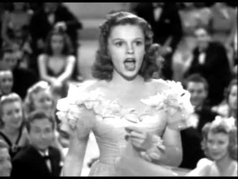
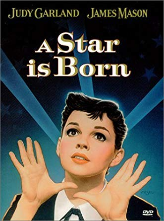

Get Happy:The Life of Judy Garland stated that Garland was groped, harassed, and approached for sex numerous times "between the ages sixteen and twenty." The co-founder and producer of Metro-Goldwyn-mayer studios, Louis B. Mayer, was the main cause. He would place his hand on Judy's breasts while she sang, claiming he was "looking for where the power came from." This same action repeated for many years until Garland finally put a stop to it. Judy found the courage to tell Mayer to never do it again, that "she will just not stand for it."
Launching her way into fame at an early age, Judy Garland became one of Hollywood's greatest stars. During the late 30s and early 40s, the teenage actress began to notice the change in the entertainment field around her. Men who were part of the movie crew started to behave differently around her.

Judy Garland's time in the theatre industry ripped her to pieces. Repeatedly the star was told she wasn't skinny enough, wasn't pretty enough, and wasn't good enough.In 1969, she perished due to an apparent overdose. However, Garland succeeded in accomplishing one important thing. She made her voice heard, by raising awareness to the situation of sexual assault. By telling her story, she opened the door for many young women who may have kept quiet without Judy Garland's powerful message.
